资源
看了这个大佬的博客感觉非常的流畅，研究一下这个网站所用到的框架 Astro！
正文
为什么是 Astro？
官网说用这玩意构建的网站速度快。
注意
功能
Astro 是一个集多功能于一体的 Web 框架。它内置包含了你构建网站所需的一切。还有数百个不同的集成和 API 钩子可根据你的具体用例和需求定制你的项目。
一些亮点包括：
- 群岛：一种基于组件的针对内容驱动的网站进行优化的 Web 架构。
- UI 无关：支持 React、Preact、Svelte、Vue、Solid、HTMX、Web 组件等等。
- 服务器优先 (EN)：将沉重的渲染移出访问者的设备。
- 默认无 JS：让客户端更少的执行 JS ，以提升网站速度。
- 内容集合：为你的 Markdown 内容，提供组织、校验并保证 TypeScript 类型安全。
- 可定制：Tailwind、MDX 和数百个集成可供选择。
设计原则
以下的五个核心设计原则有助于解释我们为什么做了 Astro，它需要解决的问题以及为什么 Astro 可能是你的项目或团队的最佳选择。
Astro 是…
Welcome, world!
创建项目
npm create astro@latest> npx
> create-astro
astro Launch sequence initiated.
dir Where should we create your new project?
./minor-meteor
tmpl How would you like to start your new project?
Use blog template
deps Install dependencies?
Yes
git Initialize a new git repository?
Yes
✔ Project initialized!
■ Template copied
■ Dependencies installed
■ Git initialized
next Liftoff confirmed. Explore your project!
Enter your project directory using cd ./minor-meteor
Run npm run dev to start the dev server. CTRL+C to stop.
Add frameworks like react or tailwind using astro add.
Stuck? Join us at https://astro.build/chat
进项目启动开发服务：
npm run dev> minor-meteor@0.0.1 dev
> astro dev
▶ Astro collects anonymous usage data.
This information helps us improve Astro.
Run "astro telemetry disable" to opt-out.
https://astro.build/telemetry
08:27:46 [types] Generated 1ms
astro v5.0.5 ready in 2122 ms
┃ Local http://localhost:4321/
┃ Network use --host to expose
网站的入口内容由 src/pages/index.astro 控制。
前期准备
创建第一个 Astro 页面
提示
Astro 组件的语法是 HTML 的超集。它的设计使得任何有 HTML 或 JSX 经验的人都感到熟悉。
在 src/pages/ 下创建一个 test.astro，里面放上内容：
---
import BaseHead from "../components/BaseHead.astro";
import Header from "../components/Header.astro";
import Footer from "../components/Footer.astro";
import { SITE_TITLE, SITE_DESCRIPTION } from "../consts";
---
<!doctype html>
<html lang="en">
<head>
<BaseHead title={SITE_TITLE} description={SITE_DESCRIPTION} />
</head>
<body>
<Header />
<main>
<h1>我的 Astro 网站</h1>
<h1>关于我</h1>
<h2>……和我的新 Astro 网站！</h2>
<p>
我正在学习 Astro
的入门教程。这是我网站上的第二个页面，也是我自己建立的第一页面！
</p>
<p>
随着我完成更多教程，该站点将更新，所以请继续查看我的旅程将如何进行吧！
</p>
</main>
<Footer />
</body>
</html>在 index.astro 中放入跳转入口：
<a href="/test/">测试</a>打开 /test/ 则会看到：
{kind=link}
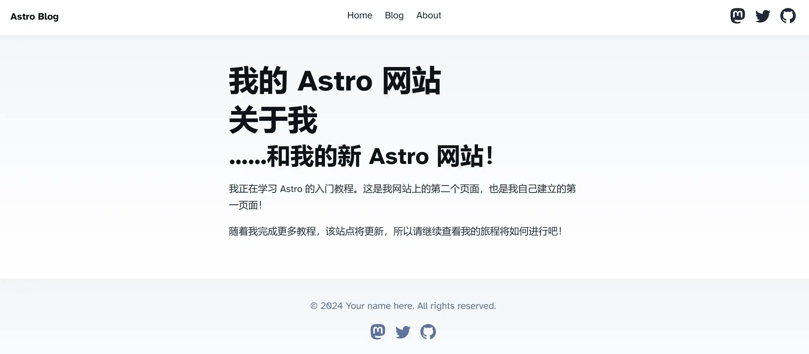
页面
第一篇 Markdown 文章
创建 src/pages/posts/post-1.md，里面放上：
---
title: '我的第一篇博客文章'
pubDate: 2024-12-16
description: '这是我 Astro 博客的第一篇文章。'
author: 'Astro 学习者'
image:
url: 'https://docs.astro.build/assets/rose.webp'
alt: 'The Astro logo on a dark background with a pink glow.'
tags: ["astro", "blogging", "learning in public"]
---
# 我的第一篇博客文章
欢迎来到我学习关于 Astro 的新博客！在这里，我将分享我建立新网站的学习历程。
## 我做了什么
1. **安装 Astro**：首先，我创建了一个新的 Astro 项目并设置好了我的在线账号。
2. **制作页面**：然后我学习了如何通过创建新的 `.astro` 文件并将它们保存在 `src/pages/` 文件夹里来制作页面。
3. **发表博客文章**：这是我的第一篇博客文章！我现在有用 Astro 编写的页面和用 Markdown 写的文章了！
## 下一步计划
我将完成 Astro 教程，然后继续编写更多内容。关注我以获取更多信息。
```C++
#include <iostream>
using namespace std;
int main() {
cout << "Hello, world!" << endl;
return 0;
}

`.md` 文件将会自动被渲染成 HTML。
### 添加 Astro 的动态内容
- [添加「关于你」的动态内容 | Docs](https://docs.astro.build/zh-cn/tutorial/2-pages/3/)
Astro 的顶部代码栅栏是由 Javascript 编写的。可以在上面定义变量：
```astro
---
const msg = "Hello, world!";
---
在正文内容中，用 {} 包含 Javascript 的表达式：
<h1>{msg}</h1>{kind=link}
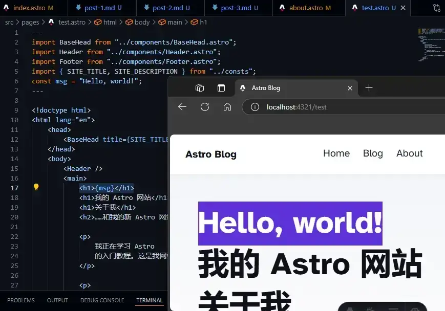
这个值在网页中就会被正确转换。
复杂一点的案例：
---
const pageTitle = "关于我";
const identity = {
firstName: "莎拉",
country: "加拿大",
occupation: "技术撰稿人",
hobbies: ["摄影", "观鸟", "棒球"],
};
const skills = ["HTML", "CSS", "JavaScript", "React", "Astro", "Writing Docs"];
---
<p>以下是关于我的几个事实：</p>
<ul>
<li>我的名字是{identity.firstName}.</li>
<li>我住在{identity.country}。我的职业是{identity.occupation}。</li>
{identity.hobbies.length >= 2 &&
<li>我的两个习惯：{identity.hobbies[0]}和{identity.hobbies[1]}</li>
}
</ul>
<p>我的技能是：</p>
<ul>
{skills.map((skill) => <li>{skill}</li>)}
</ul>提示
Astro 的模板语法类似于 JSX 语法。如果你想知道如何在你的 HTML 中使用你的脚本，那么搜索一下 JSX 中是如何做到的，这可能是一个很好的出发点！
条件渲染：
---
const happy = true;
const finished = false;
const goal = 3;
---
<!-- 显示 -->
{happy && <p>我非常乐意学习 Astro！</p>}
<!-- 没有东西被显示 -->
{finished && <p>我完成了这节教程！</p>}
<!-- 为真，渲染冒号前面的 -->
{goal === 3 ? <p>我的目标是在三天内完成。</p> : <p>我的目标不是 3 天。</p>}添加样式
引入 CSS：
{kind=link}
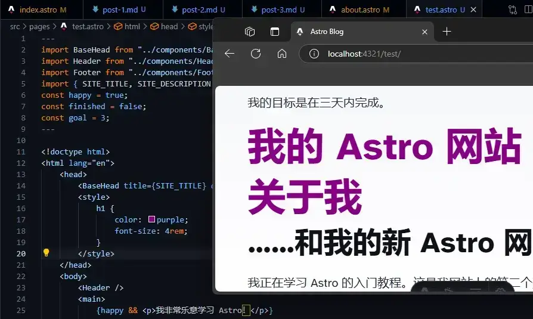
注意
Astro 的 <style> 标签还可以使用 define:vars={ {...} } 指令引用 frontmatter 中的任何变量。你可以在代码围栏中定义变量，然后在样式标签中将其用作 CSS 变量使用。
---
const skillColor = "navy";
---
<style define:vars={{skillColor}}>
h1 {
color: purple;
font-size: 4rem;
}
.skill {
color: green;
color: var(--skillColor);
font-weight: bold;
}
</style>{kind=link}
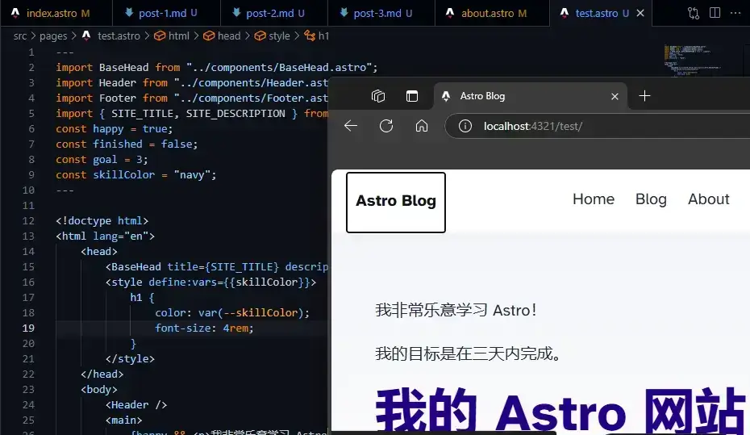
全局样式
注意
Astro 的 <style> 标签默认是有作用域的，意味着它只能影响到当前文件中的元素。
在 Astro 文件的 frontmatter 中加入如下语句即可引入外部 CSS：
---
import '../styles/global.css';
---组件
创建和设计 Astro 组件
注意
在项目中创建一个新的文件夹 src/components/ 来容纳 .astro 文件，它们会被用来生成 HTML 代码，但不会成为网站上的新页面。
创建一个 src/components/Navigation.astro，放入如下内容：
---
---
<a href="/">首页</a>
<a href="/about/">关于</a>
<a href="/blog/">博客</a>在 frontmatter 中注册后便可使用这个组件：
---
import Navigation from '../components/Navigation.astro';
---
<Navigation />{kind=link}
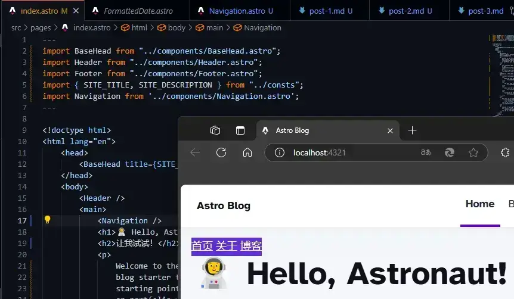
创建社交媒体 footer
就是教你怎么在组件中复用另一个组件，同时传递参数。
创建一个 src/components/Navigation.astro，内容如下：
---
const { platform, username } = Astro.props;
---
<a href={`https://www.${platform}.com/${username}`}>{platform}</a>Astro.props; 这么写应该就是可以提供一个传参的接口了（作为 props 接收）。
在 src/components/Footer.astro 中引入并使用它：
---
import Social from './Social.astro';
---
<Social platform="twitter" username="astrodotbuild" />{kind=link}
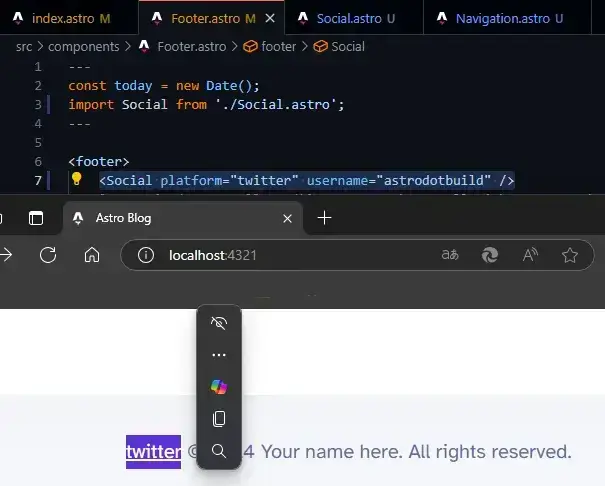
第一个浏览器脚本
创建一个 src/components/Hamburger.astro，内容如下：
---
---
<style>
.hamburger {
padding-right: 20px;
cursor: pointer;
}
.hamburger .line {
display: block;
width: 40px;
height: 5px;
margin-bottom: 10px;
background-color: #ff9776;
}
</style>
<div class="hamburger">
<span class="line"></span>
<span class="line"></span>
<span class="line"></span>
</div>创建 src/components/menu.js，内容如下：
document.querySelector('.hamburger').addEventListener('click', () => {
console.log('clicked');
});引入并渲染 Hamburger.astro，并引入 menu.js：
---
import Hamburger from "../components/Hamburger.astro";
---
<Hamburger />
<script>
import "../scripts/menu.js";
</script>{kind=link}
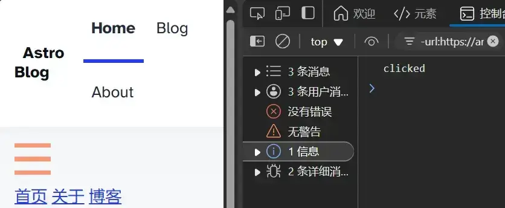
布局
第一个布局组件
创建一个 src/layouts/BaseLayout.astro，给 BaseLayout 设置插槽：
注意
<slot /> 允许你将写在开放和闭合 <Component></Component> 标签之间的子内容注入（或者说是「插入」）到任何 Component.astro 文件中。
---
import Header from '../components/Header.astro';
import Footer from '../components/Footer.astro';
import '../styles/global.css';
const { pageTitle } = Astro.props;
---
<html lang="zh-cn">
<head>
<meta charset="utf-8" />
<link rel="icon" type="image/svg+xml" href="/favicon.svg" />
<meta name="viewport" content="width=device-width" />
<meta name="generator" content={Astro.generator} />
<title>{pageTitle}</title>
</head>
<body>
<Header />
<h1>{pageTitle}</h1>
<slot />
<Footer />
<script>
import "../scripts/menu.js";
</script>
</body>
</html>修改 src/pages/index.astro，使用这个布局组件，并传参：
---
import BaseLayout from '../layouts/BaseLayout.astro';
const pageTitle = "首页";
---
<BaseLayout pageTitle={pageTitle}>
<h2>My awesome blog subtitle</h2>
</BaseLayout>{kind=link}
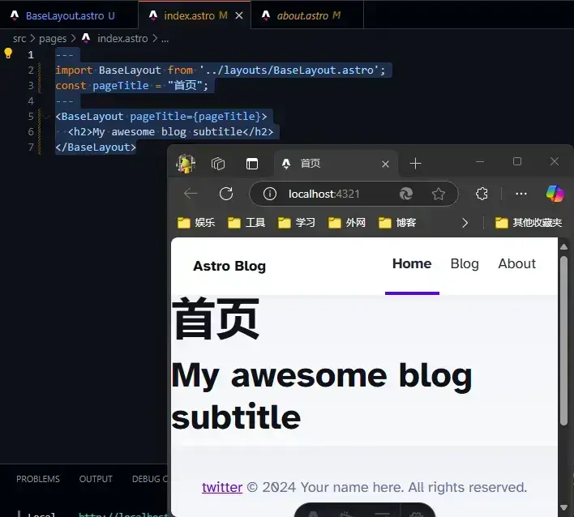
博客布局
创建 src/layouts.MarkdownPostLayout.astro：
---
const { frontmatter } = Astro.props;
---
<html lang="zh-cn">
<head>
<meta charset="utf-8" />
<link rel="icon" type="image/svg+xml" href="/favicon.svg" />
<meta name="viewport" content="width=device-width" />
<meta name="generator" content={Astro.generator} />
</head>
<body>
<h1>{frontmatter.title}</h1>
<p>Written by {frontmatter.author}</p>
<slot />
</body>
</html>在 src/pages/posts/post-1.md 中，设置 frontmatter 属性。
---
layout: ../../layouts/MarkdownPostLayout.astro
title: '我的第一篇博客文章'
pubDate: 2022-07-01
description: '这是我 Astro 博客的第一篇文章。'
author: 'Astro 学习者'
image:
url: 'https://docs.astro.build/assets/rose.webp'
alt: 'The Astro logo on a dark background with a pink glow.'
tags: ["astro", "blogging", "learning in public"]
---
# 我的第一篇博客文章
欢迎来到我学习关于 Astro 的新博客！在这里，我将分享我建立新网站的学习历程。
## 我做了什么
1. **安装 Astro**：首先，我创建了一个新的 Astro 项目并设置好了我的在线账号。
2. **制作页面**：然后我学习了如何通过创建新的 `.astro` 文件并将它们保存在 `src/pages/` 文件夹里来制作页面。
3. **发表博客文章**：这是我的第一篇博客文章！我现在有用 Astro 编写的页面和用 Markdown 写的文章了！
## 下一步计划
我将完成 Astro 教程，然后继续编写更多内容。关注我以获取更多信息。
```C++
#include <iostream>
using namespace std;
int main() {
cout << "Hello, world!" << endl;
return 0;
}

可以看到 Markdown 的内容被插入到了 `<slot/>` 中。
### 布局结合，两全其美
修改 `MarkdownPostLayout.astro` 里的内容：
```astro
---
import BaseLayout from './BaseLayout.astro';
const { frontmatter } = Astro.props;
---
<BaseLayout pageTitle={frontmatter.title}>
<h1>{frontmatter.title}</h1>
<p>{frontmatter.pubDate.toString().slice(0,10)}</p>
<p><em>{frontmatter.description}</em></p>
<p>Written by: {frontmatter.author}</p>
<img src={frontmatter.image.url} width="300" alt={frontmatter.image.alt} />
<slot />
</BaseLayout>
这么做在布局里又套了一个布局。
这说明 astro 的布局使用 const { frontmatter } = Astro.props; 接收子对象的数据，使用 <BaseLayout pageTitle={frontmatter.title}> 将数据传递给父对象。
{kind=link}
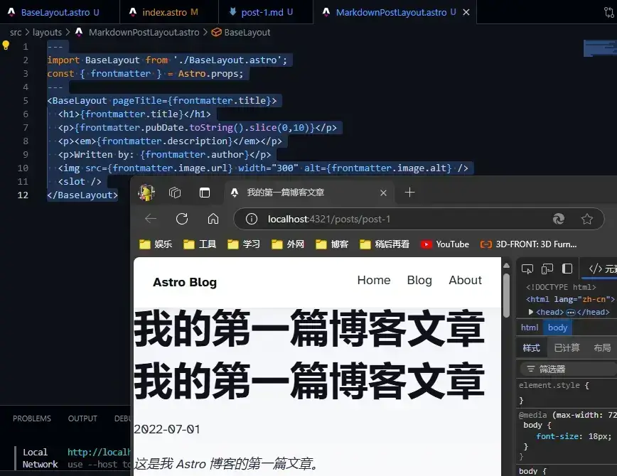
Astro API
创建文章存档页
创建 src/pages/blog.astro，内容如下：
---
import BaseLayout from '../layouts/BaseLayout.astro'
const allPosts = await Astro.glob('./posts/*.md');
const pageTitle = "我的 Astro 学习博客";
---
<BaseLayout pageTitle={pageTitle}>
<p>在这里，我将分享我的学习 Astro 的之旅。</p>
<ul>
{allPosts.map((post) => <li><a href={post.url}>{post.frontmatter.title}</a></li>)}
</ul>
</BaseLayout>这里说明了 const allPosts = await Astro.glob('./posts/*.md'); 会将所有 ./posts/ 下的 .md 文件读取，并将其中的 frontmatter 信息以对象的形式存在 allPosts 中。
之后就可以调用这个对象。
{kind=link}
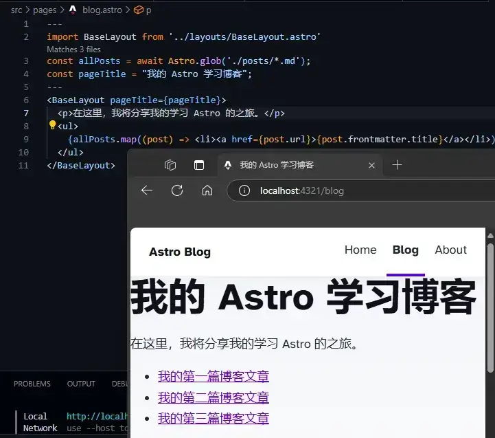
生成标签页面
创建 src/pages/tags/[tag].astro：
---
import BaseLayout from '../../layouts/BaseLayout.astro';
export async function getStaticPaths() {
return [
{ params: { tag: "astro" } },
{ params: { tag: "successes" } },
{ params: { tag: "community" } },
{ params: { tag: "blogging" } },
{ params: { tag: "setbacks" } },
{ params: { tag: "learning in public" } },
];
}
const { tag } = Astro.params;
---
<BaseLayout pageTitle={tag}>
<p>包含「{tag}」标签的文章</p>
</BaseLayout>之后就会创建 /tags/astro、 /tags/successes……等页面。
之后我们将其改为以动态路由的形式：
---
import BaseLayout from '../../layouts/BaseLayout.astro';
export async function getStaticPaths(): Promise<{ params: { tag: string }, props: { posts: any[] } }[]> {
const allPosts = await Astro.glob('../posts/*.md');
return [
{params: {tag: "astro"}, props: {posts: allPosts}},
{params: {tag: "successes"}, props: {posts: allPosts}},
{params: {tag: "community"}, props: {posts: allPosts}},
{params: {tag: "blogging"}, props: {posts: allPosts}},
{params: {tag: "setbacks"}, props: {posts: allPosts}},
{params: {tag: "learning in public"}, props: {posts: allPosts}}
];
}
const { tag } = Astro.params;
const { posts } = Astro.props;
const filteredPosts = posts.filter((post) => post.frontmatter.tags?.includes(tag));
---
<BaseLayout pageTitle={tag}>
<p>包含「{tag}」标签的文章</p>
<ul>
{
filteredPosts.map((post) => (
<li>
<a href={post.url}>{post.frontmatter.title}</a>
</li>
))
}
</ul>
</BaseLayout>重要
-
如果需要构建页面路由的信息，请将其编写在
getStaticPaths()内部。 -
要在页面路由的 HTML 模板中接收信息，请将其编写在
getStaticPaths()外部。
从现有标签生成页面
如此做，将会从现有标签生成标签页，避免了手动定义：
---
import BaseLayout from '../../layouts/BaseLayout.astro';
export async function getStaticPaths(): Promise<{ params: { tag: string }, props: { posts: any[] } }[]> {
const allPosts = await Astro.glob('../posts/*.md');
const uniqueTags = [...new Set(allPosts.map((post) => post.frontmatter.tags).flat())];
return uniqueTags.map((tag) => {
const filteredPosts = allPosts.filter((post) => post.frontmatter.tags.includes(tag));
return {
params: { tag },
props: { posts: filteredPosts },
};
});
}
const { tag } = Astro.params;
const { posts } = Astro.props;
---
<BaseLayout pageTitle={tag}>
<p>包含「{tag}」标签的文章</p>
<ul>
{posts.map((post) => <li><a href={post.url}>{post.frontmatter.title}</a></li>)}
</ul>
</BaseLayout>{kind=link}
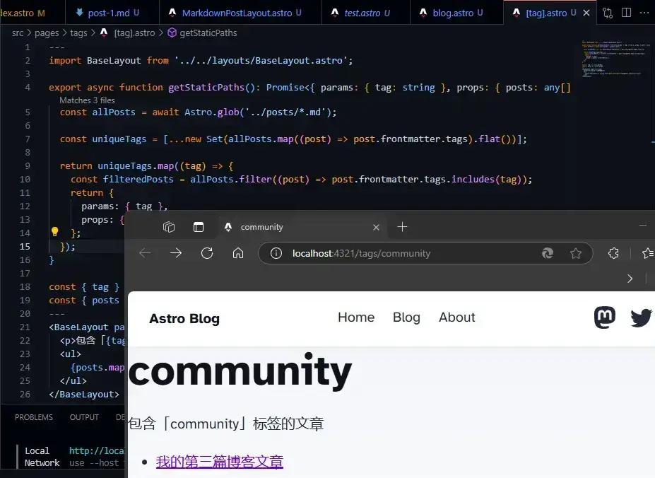
RSS
安装 RSS 包：
npm install @astrojs/rssup to date in 9s
174 packages are looking for funding
run `npm fund` for details
重新启动服务器：
npm run dev创建 src/pages/rss.xml.js：
import rss, { pagesGlobToRssItems } from '@astrojs/rss';
export async function GET(context) {
return rss({
title: 'Astro Learner | Blog',
description: 'My journey learning Astro',
site: context.site,
items: await pagesGlobToRssItems(import.meta.glob('./**/*.md')),
customData: `<language>en-us</language>`,
});
}访问 http://localhost:4321/rss.xml：
<?xml version="1.0" encoding="UTF-8"?><rss version="2.0"><channel><title>Astro Learner | Blog</title><description>My journey learning Astro</description><link>https://example.com/</link><language>en-us</language><item><title>我的第一篇博客文章</title><link>https://example.com/posts/post-1/</link><guid isPermaLink="true">https://example.com/posts/post-1/</guid><description>这是我 Astro 博客的第一篇文章。</description><pubDate>Fri, 01 Jul 2022 00:00:00 GMT</pubDate><author>Astro 学习者</author></item><item><title>我的第二篇博客文章</title><link>https://example.com/posts/post-2/</link><guid isPermaLink="true">https://example.com/posts/post-2/</guid><description>学习了一些 Astro 后，我根本停不下来！</description><pubDate>Fri, 08 Jul 2022 00:00:00 GMT</pubDate><author>Astro 学习者</author></item><item><title>我的第三篇博客文章</title><link>https://example.com/posts/post-3/</link><guid isPermaLink="true">https://example.com/posts/post-3/</guid><description>我遇到了一些问题，但是在社区里面提问真的很有帮助！</description><pubDate>Fri, 15 Jul 2022 00:00:00 GMT</pubDate><author>Astro 学习者</author></item></channel></rss>其中，<link>https://example.com/</link> 里的值在 astro.config.mjs 中编辑。
群岛
搭建 Astro 岛屿
添加 Preact：
npx astro add preact√ Resolving packages...
Astro will run the following command:
If you skip this step, you can always run it yourself later
╭─────────────────────────────────────────────────────╮
│ npm install @astrojs/preact@^4.0.0 preact@^10.25.2 │
╰─────────────────────────────────────────────────────╯
√ Continue? ... yes
√ Installing dependencies...
Astro will make the following changes to your config file:
╭ astro.config.mjs ────────────────────────────────╮
│ // @ts-check │
│ import { defineConfig } from 'astro/config'; │
│ import mdx from '@astrojs/mdx'; │
│ import sitemap from '@astrojs/sitemap'; │
│ │
│ import preact from '@astrojs/preact'; │
│ │
│ // https://astro.build/config │
│ export default defineConfig({ │
│ site: 'https://example.com', │
│ integrations: [mdx(), sitemap(), preact()], │
│ }); │
╰──────────────────────────────────────────────────╯
√ Continue? ... yes
success Added the following integration to your project:
- @astrojs/preact
Astro will make the following changes to your tsconfig.json:
╭ tsconfig.json ──────────────────────────╮
│ { │
│ "extends": "astro/tsconfigs/strict", │
│ "include": [ │
│ ".astro/types.d.ts", │
│ "**/*" │
│ ], │
│ "exclude": [ │
│ "dist" │
│ ], │
│ "compilerOptions": { │
│ "strictNullChecks": true, │
│ "jsx": "react-jsx", │
│ "jsxImportSource": "preact" │
│ } │
│ } │
╰─────────────────────────────────────────╯
√ Continue? ... yes
success Successfully updated TypeScript settings
创建 src/components/Greeting.jsx：
提示
Astro 支持多种 JavaScript 配置文件格式，如：astro.config.js、astro.config.mjs、astro.config.cjs 和 astro.config.ts。我们推荐在大多数情况下使用 .mjs，如果你想在配置文件中编写 TypeScript，则建议使用 .ts。
import { useState } from 'preact/hooks';
export default function Greeting({messages}) {
const randomMessage = () => messages[(Math.floor(Math.random() * messages.length))];
const [greeting, setGreeting] = useState(messages[0]);
return (
<div>
<h3>{greeting}! Thank you for visiting!</h3>
<button onClick={() => setGreeting(randomMessage())}>
New Greeting
</button>
</div>
);
}在 src/pages/index.astro 里：
注意
client:load 指令告诉 Astro 在页面加载时将其 JavaScript 发送并重新运行到客户端上，使组件可交互。这称为 被 Hydrate 的 组件。
<ReactCounter client:load />组件会载入 HTML、CSS 和 JavaScript。<SvelteCard />组件会载入仅 HTML 和 CSS。
---
import BaseLayout from '../layouts/BaseLayout.astro';
import Greeting from '../components/Greeting';
const pageTitle = "首页";
---
<BaseLayout pageTitle={pageTitle}>
<h2>My awesome blog subtitle</h2>
<Greeting client:load messages={["Hi", "Hello", "Howdy", "Hey there"]} />
</BaseLayout>{kind=link}
其他
命令对照：
| Astro | Hexo | 功能 |
|---|---|---|
npm run dev | hexo s | 服务器浏览 |
npm run build | hexo d | 构建项目 |
使用主题：astro-theme-pure
下载主题：
git clone https://github.com/cworld1/astro-theme-pure.git
cd astro-theme-pure安装依赖：
npm install之后要自己慢慢折腾了。
使用主题：Startlight
创建项目：
npm create astro@latest -- --template starlight进这个项目，安装依赖：
npm install启动服务器：
astro dev{kind=link}
提示
更新内容
编辑 src/content/docs/index.mdx 文件即可查看此页面的更改。
添加新内容
将 Markdown 或 MDX 文件添加到 src/content/docs 目录中即可创建新页面。
配置您的站点
在 astro.config.mjs 文件中编辑 sidebar 和其他配置项。
阅读文档
在 Starlight 文档 中了解更多信息。
渲染插件
这里，添加一个 remark 插件：remcohaszing/remark-mermaidjs: A remark plugin to render mermaid diagrams using playwright
npm install remark-mermaidjs
npm install playwright
npx playwright install --with-deps chromium在 astro.config.mjs 中引入插件：
import remarkMermaid from 'remark-mermaidjs'在 astro.config.mjs 中使用插件：
export default defineConfig({
...
// Markdown Options
markdown: {
remarkPlugins: [remarkReadingTime, remarkMath, remarkArxivCards, remarkMermaid],
rehypePlugins: [
[rehypeKatex, {}],
rehypeHeadingIds,
[
rehypeAutolinkHeadings,
{
behavior: 'append',
properties: { className: ['anchor'] },
content: { type: 'text', value: '#' }
}
]
],
...
})预览：
{kind=link}
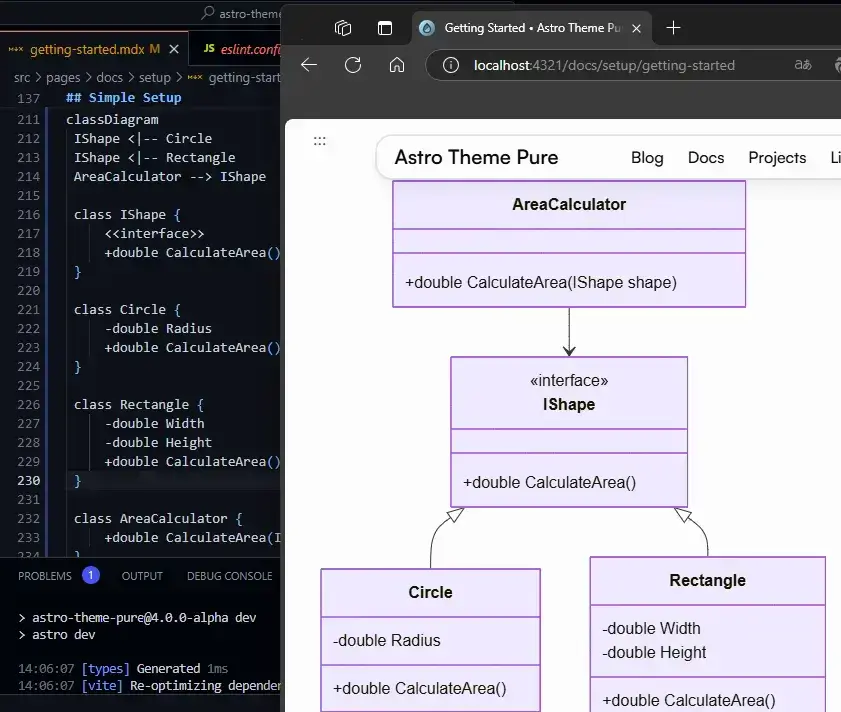